Shelf label photos
Original Walmart produce strips used for this catalog.
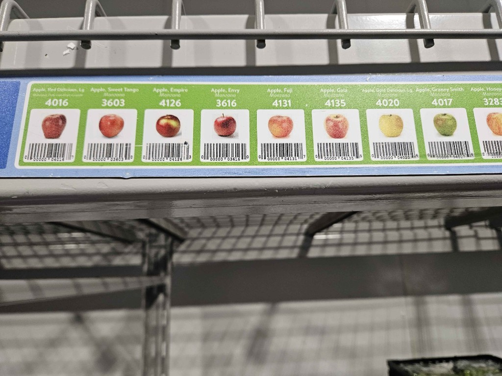
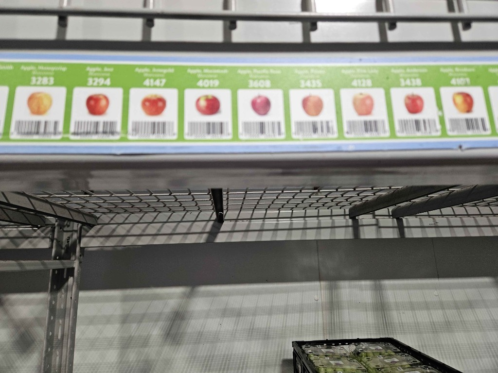
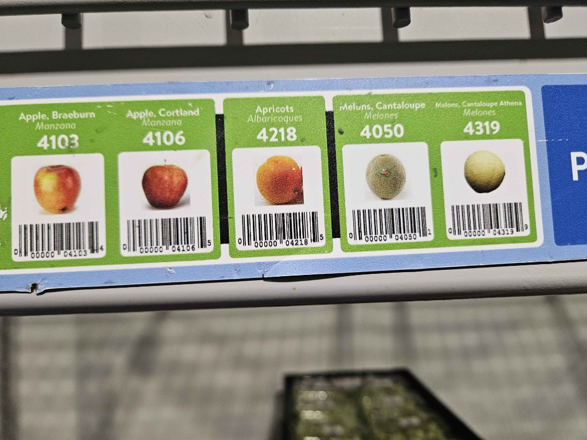
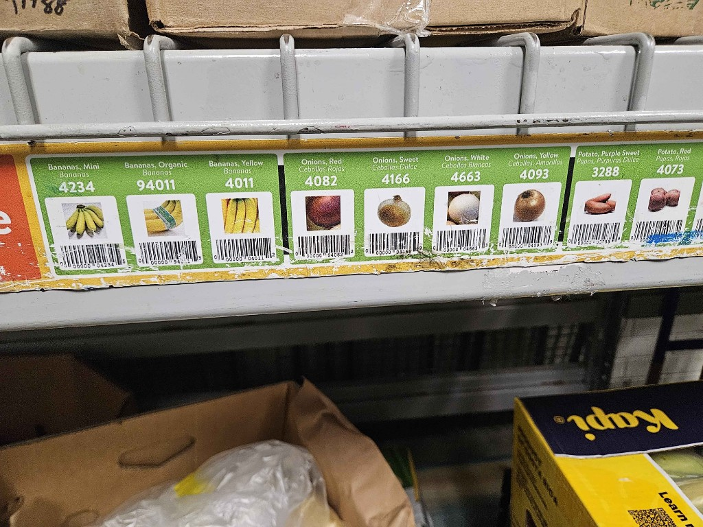
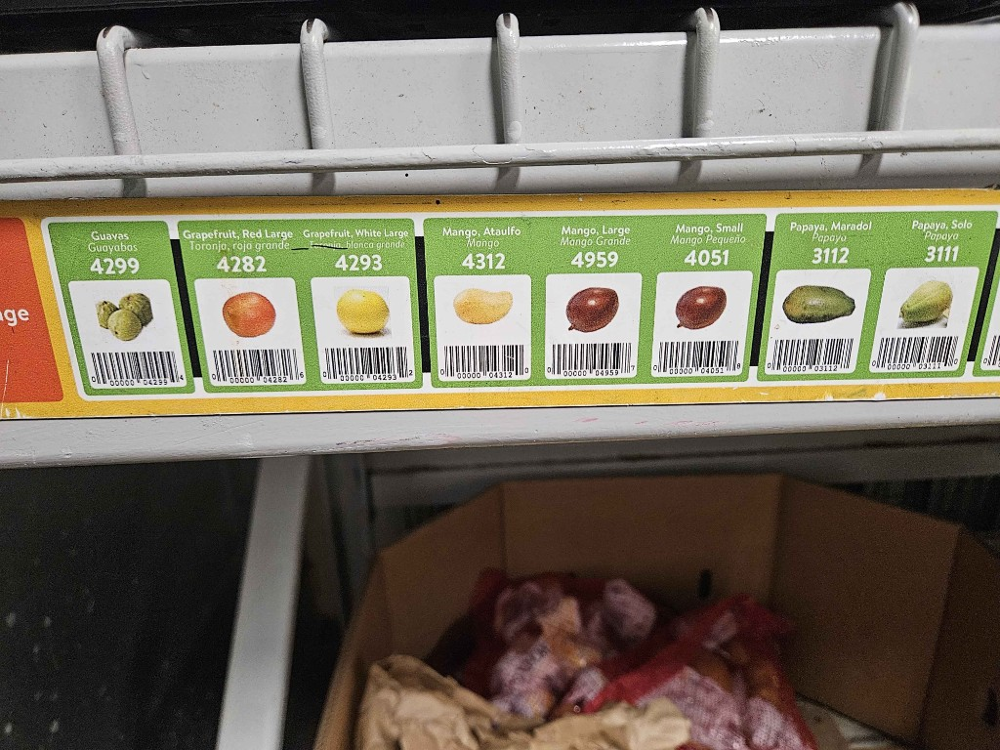
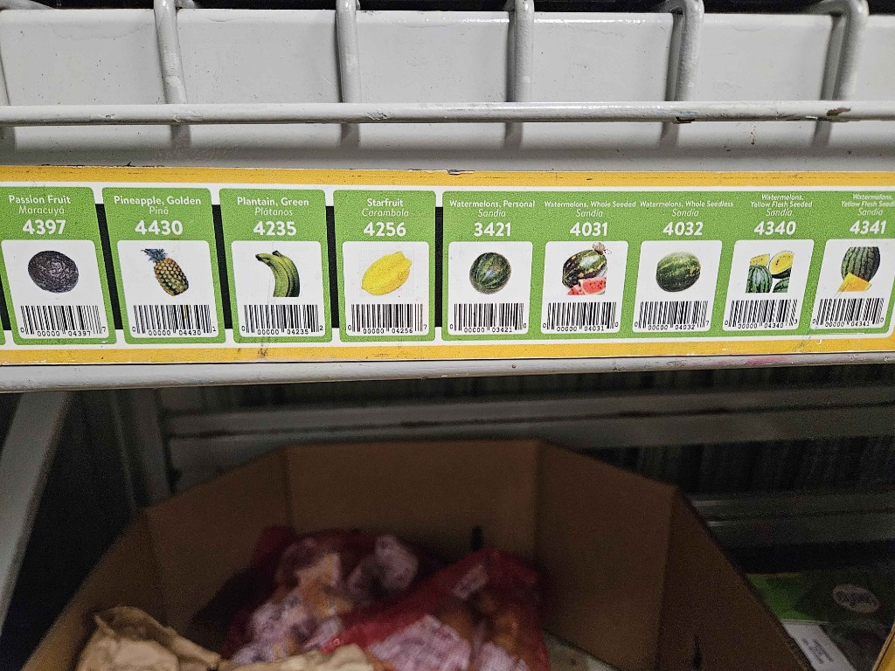
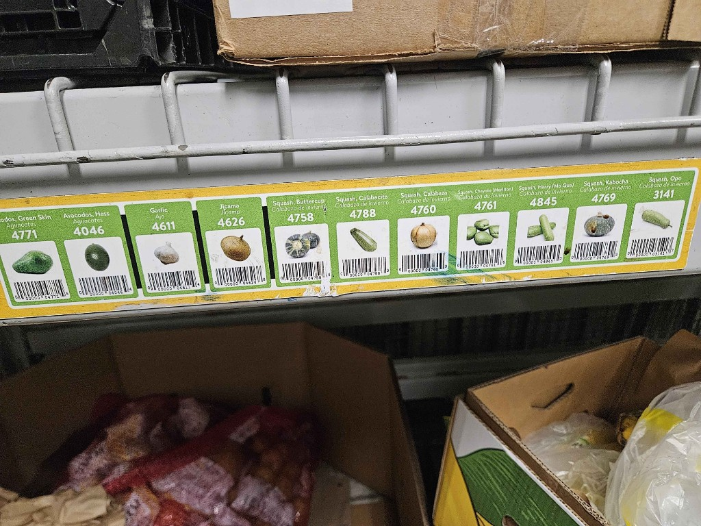
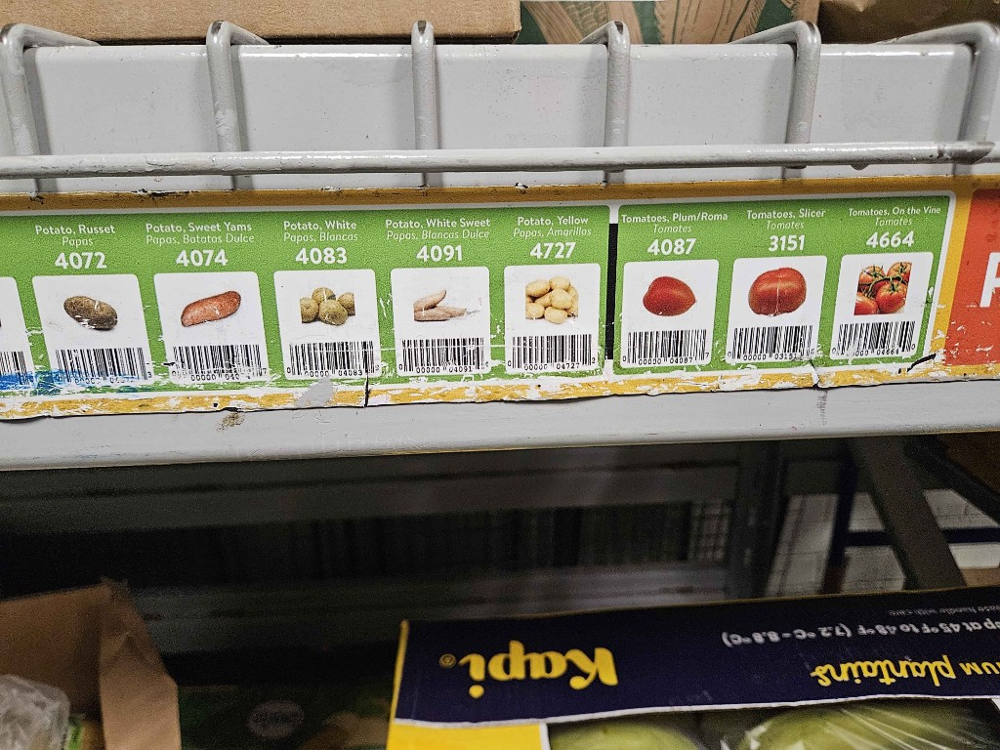
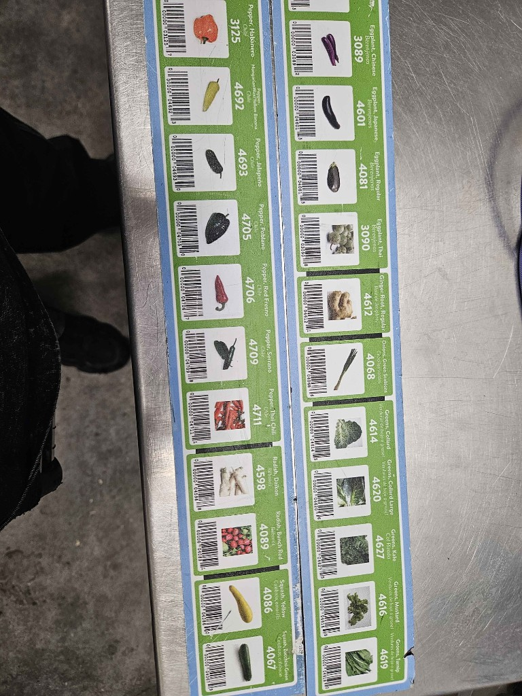
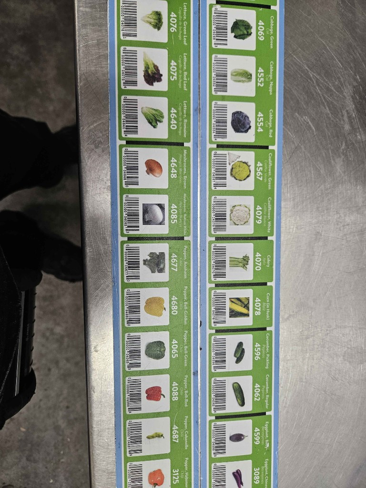
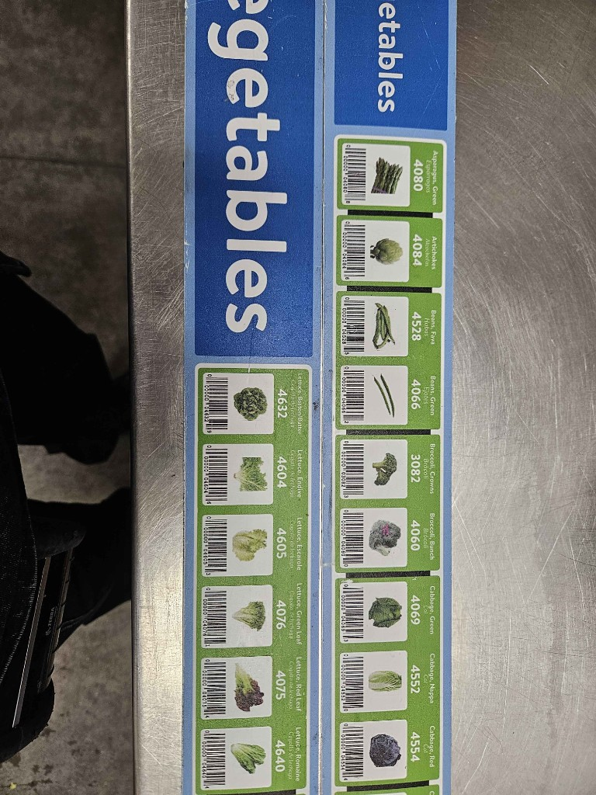
PLU Hub
Walmart produce codes — scan-ready reference
Original Walmart produce strips used for this catalog.










